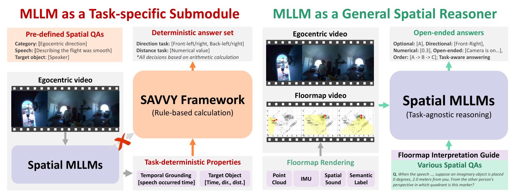

01 / SPATIAL REASONING

FloorSAVSEE THE SCENE. CONNECT THE SPACE.FloorSAV: Elucidating Spatial Audio-Visual Context with 2D Floormap for AV-LLMs
Giving audio-visual language models a shared spatial reference to reason about viewpoints, places, and paths.
Spatial reasoningAudio-visual learningMultimodal LLMs